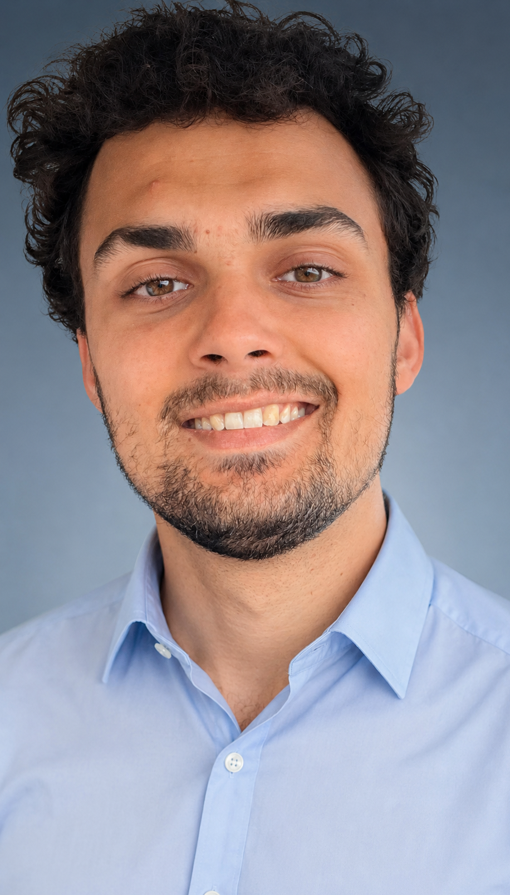

Daniel de Oliveira
Stephensen
Stephensen
Computer Scientist

Profile
I am a driven software developer with a theoretical foundation in Computer Science, specialised in algorithms and machine learning. Passionate about general problem solving and building scalable and efficient solutions. Has broad experience within full-stack development and teaching. I am graduating my master's degree in Computer Science in June 2026.
Netcompany
Aug 2022 - Jan 2024
Software Developer
- Full-stack development for public and private sector clients. Built and maintained applications for organisations including DOT (Din Offentlige Transport), esundhed.dk, VIA Studieportal, and Novo Nordisk.
University of Copenhagen
Sep 2021 - Jan 2022
Teaching Assistant — Discrete Mathematics and Algorithms
- Facilitated weekly exercise sessions for first-year BSc students. Taught 3 times per week, reviewed and graded assignments, and provided constructive written feedback.
Ctrl Play Goiânia
Jul 2018 - Nov 2018
Administration Employee and Teacher
- Taught programming to students aged 10-15 at a programming school in Brazil. Prepared course materials and handled administrative tasks.
MSc in Computer Science (10.82)
Feb 2024 - Present
University of Copenhagen
BSc in Computer Science (9.35)
Sep 2019 - Jun 2022
University of Copenhagen
HHX (Higher Commercial Examination)
Aug 2015 - Jun 2018
Hillerød Handelsgymnasium